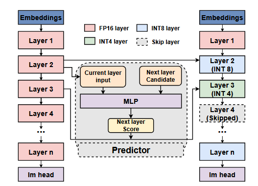

Literature Review: DASH: Input-Aware Dynamic Layer Skipping for Efficient LLM Inference with Markov Decision Policies
DASH introduces a sophisticated framework for accelerating LLM inference through adaptive layer skipping. The authors model the skipping process as a Markov Decision Process, enabling token-level decisions that dynamically determine whether to execute, skip, or partially compute each layer based on intermediate representations. The framework incorporates compensation mechanisms using differential rewards and an asynchronous execution strategy to minimize runtime overhead while preserving model accuracy.
Key Insights
The paper’s core innovation lies in formulating layer skipping as a sequential decision-making problem rather than using static or pre-defined policies. The MDP formulation enables fine-grained, context-aware decisions where each layer’s execution state depends on current hidden representations and previous layer states. This approach addresses a fundamental limitation in existing methods that struggle to balance speed and accuracy due to their lack of input-specific adaptation.
The compensation mechanism represents a crucial technical contribution, offering three execution modes: full execution (FP16), complete skipping with scaling factors, and partial computation using quantization (INT4/INT8). The scaling factors are pre-computed on calibration data to approximate skipped transformations, while the quantization option provides a middle ground between full computation and complete skipping.
The asynchronous execution strategy cleverly overlaps decision computation with layer execution by approximating future hidden states using scaled versions of current states. This design eliminates the serial dependency that would otherwise offset the benefits of layer skipping, making the approach practically viable for real-time inference.
The empirical validation demonstrates that layers with higher input-output similarity are more likely to be skipped, confirming the intuition that transformer layers exhibit significant inter-layer redundancy. The framework achieves substantial inference acceleration while maintaining competitive task performance across multiple LLM architectures.
Example
| Consider the compensation mechanism when skipping layer i. Instead of directly passing the output from layer i-1 to layer i+1, DASH computes a scaled approximation: Y{jt}^{i} = scale_j · X{jt}^{i}, where the scaling factor is derived from offline calibration: scale*i = (Σ | Y*{jt}^{i} | / | X_{jt}^{i} | ) / (Σ | T_j | ). This simple yet effective approach helps preserve semantic information that would otherwise be lost through aggressive skipping. |

Figure: Overview of the DASH Framework. This method first processes the embedding layer and main- tains full-precision computation in the first Transformer layer. Starting from the second layer, the scoring model evaluates the next layer's state using the modified in- put of the current layer, dynamically selecting the next layer's state. When a layer is skipped, a compensation mechanism is activated based on the scoring results, ef- fectively balancing inference speed and model accuracy.
[image:1]
Ratings
Novelty: 4/5 - The MDP formulation for layer skipping is genuinely creative and addresses real limitations in existing approaches. The integration of compensation mechanisms with asynchronous execution shows sophisticated engineering thinking.
Clarity: 3/5 - While the technical approach is well-motivated and clearly explained, the presentation of experimental results could be significantly improved with more comprehensive visual comparisons of performance drops versus inference speedups.
Personal Comments
This work introduces a fascinating approach to LLM efficiency that I hadn’t previously encountered before. The fundamental insight that we can dynamically decide which layers to execute during inference is both intuitive and powerful, it’s surprising this hasn’t been more extensively explored given the obvious redundancy in transformer architectures.
The MDP formulation is particularly elegant because it captures the sequential nature of layer-wise decisions while accounting for state dependencies. This makes perfect sense when you consider that the value of computing a given layer should indeed depend on what we’ve already computed and what we know about the input characteristics. The pattern recognition aspect, identifying consistent behaviors that can inform skipping decisions, aligns well with how we think about efficiency in other domains.
The asynchronous execution strategy demonstrates deep systems thinking, recognizing that the overhead of decision-making could eliminate the benefits of skipping. This attention to implementation details often separates theoretical contributions from practically useful ones.
Looking forward, this work opens interesting questions about learned efficiency patterns across model families and whether these skipping policies might transfer between models or adapt to deployment constraints. The intersection of reinforcement learning principles with efficient inference represents a promising research direction that could significantly impact how we deploy large models in resource-constrained environments.
Enjoy Reading This Article?
Here are some more articles you might like to read next: